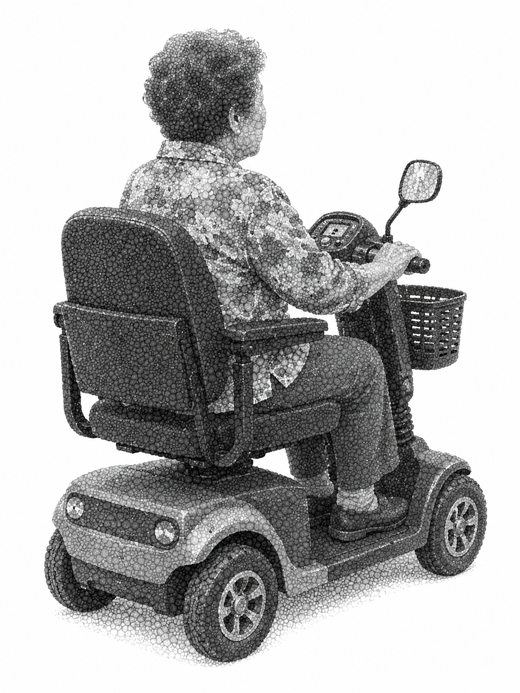
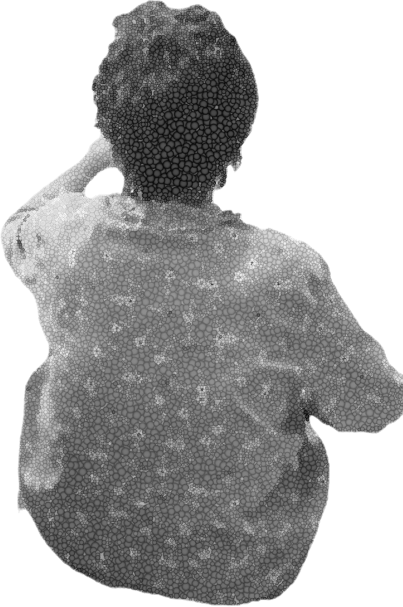
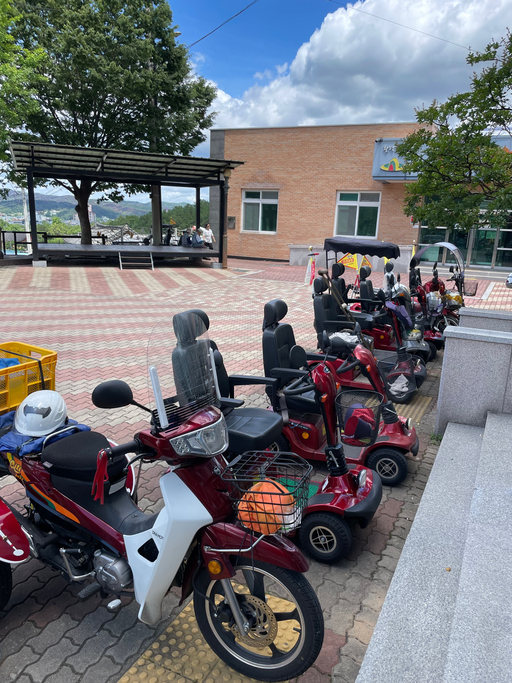
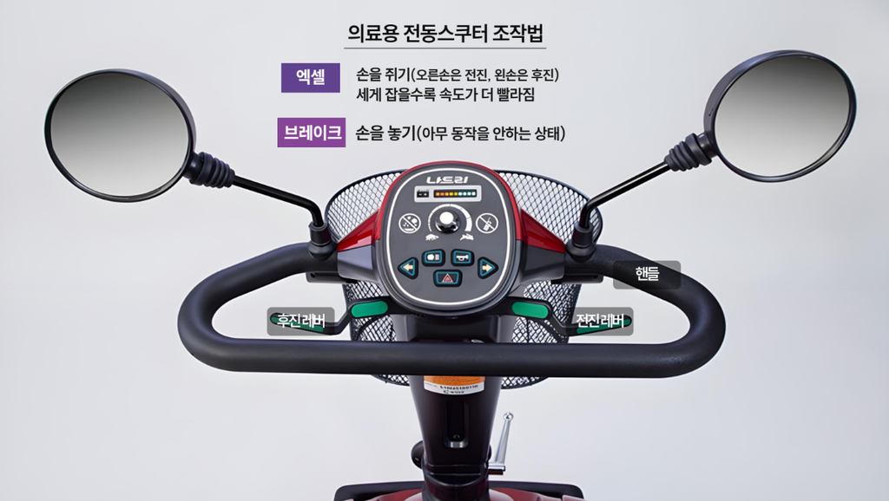
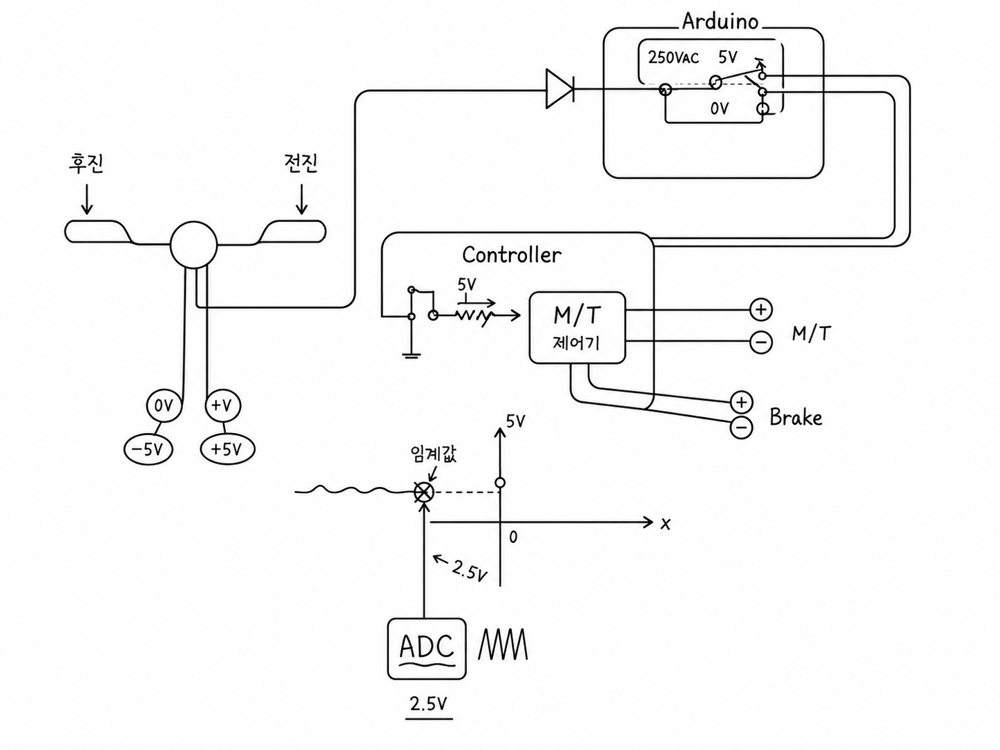
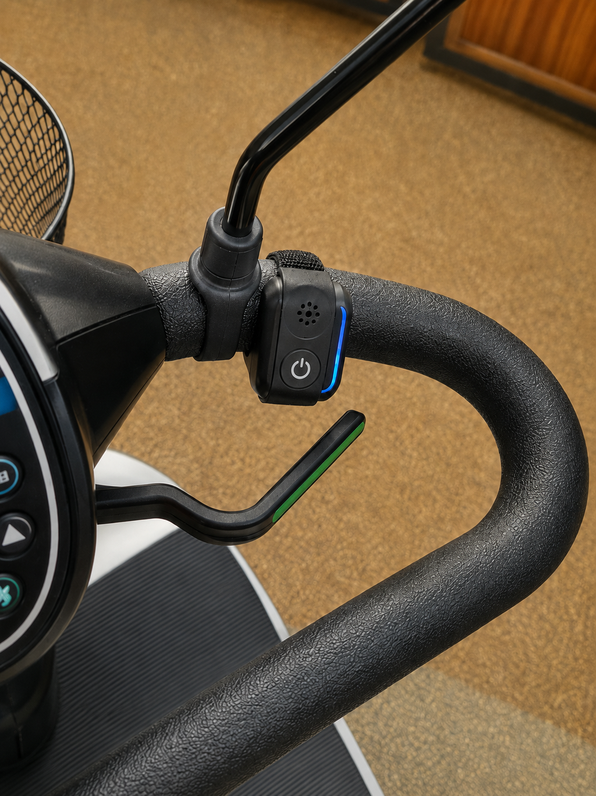
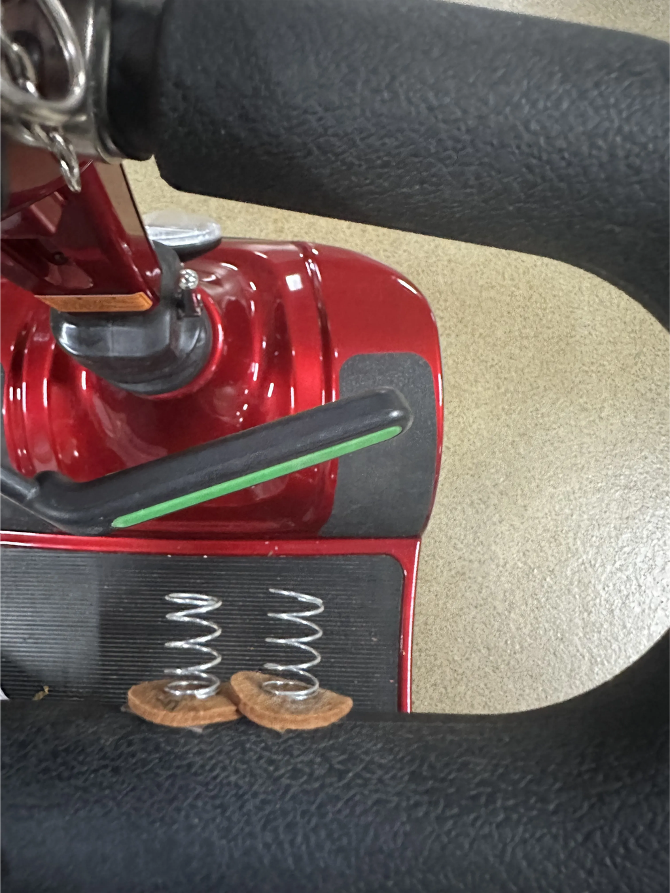
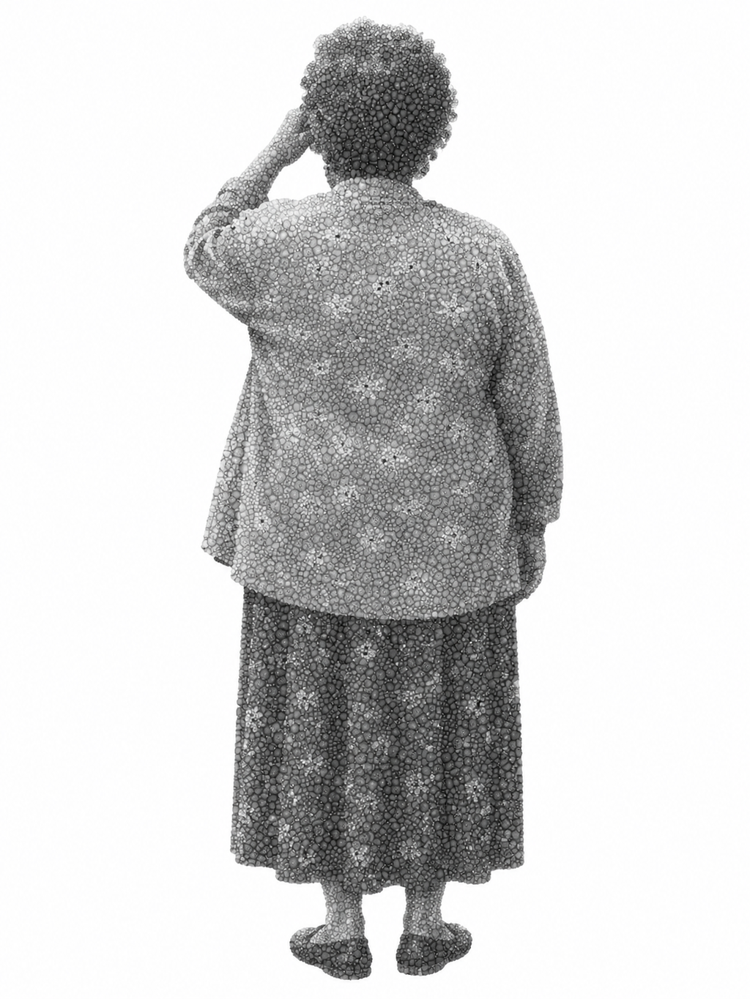

그날도 할머니는 늘 가던 길을 가고 있었다.
사고는 낯선 곳이 아니라, 일상의 가장 가까운 곳에서 일어났다. 최귀향 할머니는 논 가장자리에 의료용 전동스쿠터를 세우려 했다. 머리로는 멈춰야 한다고 생각했지만, 손은 레버를 놓지 못했다.

의료용 전동스쿠터에 몸을 맡긴 채 길을 나서는 어르신
"논 가세 세우려고 했어. 거기서 딱 세워야 된다고 생각하고 있었지. 근데 나도 모르게 손에 힘이 들어가더라고. 세우려면 놔야 되는데, 그걸 꽉 쥐어버린 거야. 그러니까 전동차가 멈추는 게 아니라 앞으로 가버렸어. 그대로 논에 빠졌지. 내가 생각을 안 한 게 아니야. 분명 세워야 한다고 생각은 하고 있었어. 근데 자전거를 오래 타서 그런가, 몸이 헷갈린 것 같아. 자전거는 잡으면 서잖아. 근데 이건 잡으면 막 가니까."
늘 가던 길가의 수로로 굴러떨어진 전동스쿠터. 사고는 일상의 가장 가까운 곳에서 일어났다.
멈추고 싶었던 순간, 몸은 먼저 굳었다.
의료용 전동스쿠터는 멈추지 않았고, 사고는 한순간에 찾아왔다. 할머니는 사고 직후에도 다시 전동스쿠터를 타고 집에 갔다. 집에 가서 밥도 먹고, 마을회관에도 있었다. 하지만 시간이 지날수록 몸이 너무 아파, 뒤늦게 병원을 찾았다.
"그때는 그렇게 크게 다친 줄도 몰랐어. 논에 빠진 거 다시 일으켜서, 그거 타고 집에도 갔어. 근데 있다 보니까 몸이 너무 아픈 거야. 병원에 갔더니 뼈가 부러졌다고 하더라고. 갈비뼈도 그렇고 발가락도 그렇고. 병원에서 왜 이제 왔냐고 혼났어. 큰 병원 가야 된다고 119 불러줘서 응급차 타고 안동 큰 병원까지 갔지."
최귀향 할머니

사고 직후엔 멀쩡했지만, 시간이 지나서야 골절의 통증이 찾아왔다.
"전동차가 불편한 게 뭐냐고 물으면, 나는 그게 제일 먼저 생각나. 자전거랑 달라. 자전거는 잡으면 멈추는데, 전동차는 잡으면 막 가. 요즘은 익숙해지긴 했는데도 나도 모르게 꽉 쥘 때가 있어. 마음이 바빠지거나 갑자기 당황하면 엑셀인지 브레이크인지 헷갈려. 머리로는 멈춰야 한다고 아는데, 손이 먼저 꽉 쥐어져."
최귀향 할머니
우리는 그 장면을 너무 쉽게 '조작 미숙'이라 불러왔다.
하지만 현장에서 들은 이야기는 사뭇 달랐다.
"조작 때문에 사고 난 거라고 단정하기는 어렵습니다. 전동차를 늦게 발견하거나 못 보는 경우도 많아요."
의성경찰서 교통관리계 관계자
"당황하거나 놀라시면 손을 안 놓으셔서 사고 나는 경우가 많아요."
안동 의료기기점 사장님
"갑작시레 깜짝 놀라가꼬 헷갈리가꼬, 놔야 되는데 꽉 쥐아삣어."
E 어르신, 88세 · 운전 경력 5년차
1부 · 문제의 실마리
문제는 조작법을 몰랐다는 데 있지 않았다.
위험한 순간, 사람은 본능적으로 몸에 힘을 준다. 그런데 전동스쿠터는 그 반응을 멈춤이 아니라 가속으로 받아들인다.
오조작멈춰야 하는 상황에서 엑셀 레버를 계속 쥐고 있는 것
오조작 사고오조작으로 인해 발생하는 사고
현장에서 기록한 의료용 전동스쿠터 조작 방식 — 레버를 잡으면 나아가고, 놓아야 멈춘다.
"어르신들은 놀라면, 손을 더 꽉 잡으세요."
의료기기 판매점에서 들은 이 말은 사고를 다시 보게 만든 첫 번째 단서였다. 안동의 한 의료기기점 사장님께 판매 시 교육 내용을 묻자 이렇게 답했다. "레버를 놔야 멈추는데, 어르신들께서 놀라거나 당황하면 계속 잡고 있어서 사고 나는 경우가 많아요. 그래서 멈추려면 꼭 놓으라고 알려드려요." 자료 조사나 다른 이해관계자 인터뷰에서는 듣지 못했던 이야기였으나, 연달아 방문한 3곳의 의료기기점에서도 같은 답변을 들을 수 있었다.

안동의 한 의료기기점. 판매처 세 곳 모두 같은 이야기를 했다.
그래서 오조작이 정말 사고의 주요 원인이었는지 파악하기 위해 당사자 인터뷰를 시작했다. 2025년 7월 21일부터 8월 8일까지, 의성군에서 의료용 전동스쿠터를 이용하는 어르신 49명을 직접 만났다.
조사 지역
경상북도 의성군 (의성읍·안계면·금성면·가음면·춘산면·봉양면·사곡면)
인터뷰 기간
2025. 7. 21 ~ 8. 8
당사자 인터뷰
의료용 전동스쿠터 이용 어르신 49명
이해관계자
의료기기점·경찰서·지구대·파출소·119·버스/택시 기사·구난차 업체·전동보장구 연습장
조사 내용
사고 경험, 오조작 경험, 교육·면허 여부, 타 이동수단 운전 경험, 주행 환경, 사고 장소와 피해
팀 RE:MOVE가 다닌 의성 7개 읍·면의성 곳곳에서 어르신을 직접 만났다 — 당사자 인터뷰 49회, 이해관계자 인터뷰 22회.
우리는 사고의 책임을 묻기 전에, 사고의 구조를 먼저 물었다.
의성에서 만난 49명의 이야기 속에는 반복되는 위험의 패턴이 있었다.
조사 결과 ① — 사고는 어쩌다 한번 일어나는 일이 아니었다
49명 중 사고·오조작 경험
전체사고 경험오조작 원인
49명 중 22명이 사고 경험 → 그중 12명의 원인은 오조작
49명 중 22명은 이미 사고를 경험하고 있었다. 그중 12명이 경험한 사고의 원인은 오조작이었다. 사고는 뉴스 속 극단적인 사건이 아니라, 어르신의 생활 안에서 반복되고 있었다.
조사 결과 ② — 오조작은 가볍게 넘길 수 있는 실수가 아니었다
오조작 경험 → 실제 사고
전체오조작 경험사고로 이어짐
오조작 경험 16건 중 12건이 실제 사고로 — 골절 등 심각한 부상도
오조작 경험 16건 중 12건은 실제 사고로 이어졌다. 골절과 같은 심각한 부상도 있었다. 멈춰야 할 순간에 멈추지 못하는 것은, 사고 직전 반복되는 위험 신호였다.
조사 결과 ③ — 사고는 가장 취약한 이들에게 집중됐다
오조작 경험자 16명의 구성
70대 이상 → 면 거주 → 타 이동수단 무경험 → 여성
70대 이상
16명 중 13명
면(面) 거주
13명 중 8명
타 이동수단 무경험
8명 중 4명
성별
4명 전원 여성
오조작 경험자 16명의 취약 구성
사고는 70대 이상의, 면(面)에 거주하는, 다른 이동수단을 운전해본 경험이 없는 여성들에게 집중됐다. 가장 도움이 필요한 이들에게 위험이 쏠려 있었다.
조사 결과 ④ — 사고는 먼 도로가 아니라, 매일 지나던 길에서 일어났다
오조작 사고 12건의 발생 장소
집 앞 3시장 3농로 3차도 1확인불가 2
집 앞 3 · 시장 3 · 농로 3 · 차도 1 · 확인불가 2 — 가장 익숙한 공간이 가장 위험했다
집 앞, 시장, 농로. 가장 익숙한 공간이 가장 위험한 순간이 되었다.
"장에 사람이 많으니까 정신머리가 하나도 없어가 멈춘다카는걸 그냥 꽉 쥐아삣어. 그래가꼬 좌판 다 밀어삣다."
D 어르신, 83세
"내는 시골 살아가 맨날 농로로 댕기지. 근데 농로라 좁아. 정신머리 놓고 있다가 냅다 들이박아삣다."
H 어르신, 80대
"집에 다 와가 세울라다가 꽉 잡아삐는 바람에.. 냅다 들이박아삐서 앞이 좀 뿌사짓어."
I 어르신, 81세
읍내 동선이 가장 넓고 붐비는 곳 — 사고도 집 앞·시장·농로 같은 일상의 길에서 일어났다.
조사 결과 ⑤ — 오래 탔다고 안전해지는 문제도 아니었다
오조작 사고 경험자의 운전 경력
초기 4중장기 5확인불가 3
초기 4 · 중장기 5 · 확인불가 3 — 익숙한 사람에게도 위험은 다시 찾아왔다
익숙한 사람에게도, 익숙한 길에서도, 위험은 다시 찾아왔다. 운전 경력은 사고를 막아주지 못했다.
"논두렁 가에 세울라캤는데 그냥 꽉 쥐어가꼬 논에 팍 빠져삣어. 왜 그랬는가 몰라.."
C 어르신, 82세 · 운전 경력 10년차에 사고
"여 집 앞 삽작거리에서 뭐 갑작시레 깜짝 놀라가꼬 헷갈리가꼬 놔야 되는데 꽉 쥐아삣어."
E 어르신, 88세 · 운전 경력 5년차에 사고
이제 질문은 달라져야 한다. 누가 실수했는가가 아니라, 왜 같은 사고가 반복되는가.
조심하지 않았던 사람이 아니라, 조심해도 막기 어려웠던 구조를 봐야 한다.
3부 · 문제의 메커니즘
오조작은 이 순서로 일어난다
오조작이 발생하는 순서는 다음과 같다. 작은 주의 분산에서 시작해, 단 몇 초 만에 사고에 이른다.
이용자 주의 분산 / 집중 저하
무의식적으로 전진 레버를 쥔다
의료용 전동스쿠터가 이동한다
당황 · 놀람
인지적 과부하로 본인의 행동을 자각하지 못함
레버에서 손을 떼지 못한다
이용자 패닉 발생
사고 발생

의료용 전동스쿠터 조작부 — 레버를 잡으면 나아가고(액셀), 놓아야 멈춘다(브레이크).
이렇게 인지적 과부하가 발생하는 이유는 레버 구조와 밀접한 관련이 있다. 의료용 전동스쿠터는 본래 장애인을 위한 의료기기로 만들어졌기 때문에, 레버를 아주 적은 힘으로 잡고 놓음으로써 운전할 수 있다. 평소엔 더할 나위 없이 편하고, 놓으면 바로 멈추기에 안전하다. 하지만 당황하거나 놀라는 상황에선 몸에 힘이 들어가는 것이 인간의 자연스러운 반응이다. 이럴 때 레버는 오히려 위험을 가중시킨다. 문제의 원인은 "인지적 과부하를 유발하는 의료용 전동스쿠터 조작 방식"이라고 볼 수 있다.
현재 조작 방식
신체 반응
레버를 잡으면 이동
무의식적으로 손에 힘이 들어감
레버를 더 잡으면 가속
패닉에 빠지면 더 세게 쥘 수 있음
레버를 놓아야 정지
당황하면 손을 펴기 어려움
"이게 그러니까 사람이 자기가 그걸 맹신하고 있어도 갑작스러운 일이니, 그러면 주먹을 쥐게 되지, 주먹을 피게 안 된다고."
의성읍 도동3리 노인회장
4부 · 이동권과 의료용 전동스쿠터
우리는 너무 쉽게 노인의 사고를 노인의 탓으로 끝냈다.
조심하라는 말은 쉬웠고, 구조를 바꾸는 일은 늘 늦었다. 하지만 반복되는 사고 앞에서 필요한 것은 더 잦은 주의가 아니라 보장된 안전이다.
의료용 전동스쿠터는 어르신의 하루를 이어주는 '발'이었다
"아이고, 걸어가려 하면 못 가고. 전동차 타믄 갈 수 있지. 시장에나 가고, 약 타러 갈 때도 한 번씩 가고. 매일 타는 건 아니어도 볼일 생기면 그걸 타고 가는 거야."
김옥자 어르신
"그거 없으면 아무것도 안 되지. 꼼짝도 못해. 마트에도 하루에 두세 번씩 가고, 장 봐가 짐도 싣고 오고, 볼일도 보고. 걸어가라 하면 못 가니까 타는 거지. 시간으로 보면 딸보다도 낫고 아들보다도 나아."
이순자 어르신
전동스쿠터에 의지해 길을 나서는 어르신. 누군가에겐 두 다리를 대신하는 '발'이다.
시장에 가는 길. 병원에 가는 길. 마을회관으로 향하는 길. 밭으로 나가는 길. 사고가 한 번 나면 그 길을 다시 나서기가 어려워진다.
넘어진 것은 몸만이 아니었다. 다시 나갈 용기와 혼자 움직일 수 있는 일상도 함께 흔들렸다.
"내가 잘못해가 그랬지 싶어서, 요새도 그 길 가면 만날 생각나요. '왜 그랬지' 그 생각이 자꾸 나. 사고가 한 번 나고 나니까 그 길이 그냥 길이 아니라, 그때 일이 자꾸 떠오르는 길이 되는 거야."
김태선 어르신
"사고가 해마다 는다고 그래. 아들도 겁을 줘서 중앙도로는 못 나가. 무조건 택시 타라 그래. 나가면 조심하라카고, 또 조심하라카고. 그러니까 전동차가 있어도 어디는 못 가게 되는 거지."
이순자 어르신
의료용 전동스쿠터가 멈추면, 어르신의 생활도 함께 멈춘다.
5부 · 해결을 위한 5가지 시도
어르신을 더 조심시키는 대신, 구조를 바꾼다
RE:MOVE는 사고를 줄이는 방법을 현장에서 다시 찾기 시작했다. 어르신에게 더 조심하라고 말하기 전에, 사고가 반복되는 조건을 바꾸기 위해서. 의료용 전동스쿠터에 최소한의 안전장치를 직접 설계하고, 3D 프린터로 출력해 현장에서 시험했다.
직접 만든 안전장치를 의성 현장에서 시험했다.
설계 기준 ① 실제로 오조작 사고를 방지할 수 있는가 ② 기존 의료용 전동스쿠터에 적용 가능한가 ③ 고령 이용자에게 새로운 인지 부담을 주지는 않는가
시도 01
안심손
촉각 피드백
끝까지 당긴 순간, 손이 알아차릴 수 있도록.
레버를 끝까지 당겼을 때 촉각 자극을 주어, 위험한 조작을 손이 먼저 인식하게 만드는 시도.
전동스쿠터 조작부에 부착한 '안심손' 프로토타입
시도 02
스마트레버지킴이 1안
자동 제어
위험한 가속을, 기계가 먼저 알아차릴 수 있도록.
짧은 시간 안에 레버가 급격히 당겨지는 상황을 감지해 가속을 차단하는 자동 제어 시스템.

가속 차단 자동 제어 회로 설계(아두이노 기반)
LG 연구원 (대충라이프) "기술적으로는 만들 수 있지만, 실제 제품에 넣으려면 단순 회로 추가 수준이 아니라 제조사 설계, 안전 로직, 인증 절차가 함께 가야 한다."
별따러가자 김경목 대표 "스쿠터는 위험한 순간에 힘이 들어가면 멈추는 게 아니라 더 가속되는 구조라서, 문제를 짚은 방향이 신선하고 좋았습니다. 다만 내부 신호나 ECU까지 건드리는 방식은 기술적으로 가능해도 의료기기 개조와 신뢰성 문제가 커서, 실제 적용까지는 긴 검증이 필요합니다."
시도 03
스마트레버지킴이 2안
진동·소리 경고
멈춰야 할 순간을, 진동과 소리로 알려주도록.
급격한 레버 입력이 감지되면 사용자에게 즉각적인 진동·소리 경고를 보내는 부착형 장치.

조작부에 부착한 진동·소리 경고 장치 프로토타입
경희대학교 Age-Tech 연구소 "솔루션 설계 방식 자체는 논리적으로 보입니다. 다만 오조작의 수치 데이터를 측정하는 것, 데이터를 바탕으로 오조작을 숫자로 정의하는 것, 솔루션을 개발하는 것, 솔루션을 검증하는 것 하나하나가 큰 연구처럼 보입니다."
⭐ 시도 04 · 프로토타입 검증 완료
골든타임 레버 가드
현장 실험
사고 직전, 멈출 수 있는 시간을 조금 더.
레버가 한 번에 끝까지 당겨지는 속도를 늦춰, 사고 직전 사용자가 반응할 수 있는 시간을 확보하는 방식이다. 프로토타입 실험 결과, 오조작 행위가 발생한 지점부터 위험 지점까지 도달하는 시간이 다음과 같이 달라졌다.
가드 미부착
5.77초
가드 부착
6.66초
0%
위험 지점까지 도달 시간 +0.89초 — 약 15.4% 더 확보
전동스쿠터 오조작 사고는 짧은 순간에 레버가 끝까지 당겨지며 발생한다. 이때 1초에 가까운 시간이 더 생긴다는 것은, 사용자가 손을 놓거나 주변 사람이 제지할 수 있는 '사고 직전의 완충 시간'이 될 수 있다.

골든타임 레버 가드 1차·2차 프로토타입
"이거 달고 나니까 확 잡아도 바로 훅 나가는 느낌이 덜해서 마음이 좀 놓이더라. 근데 타다 보니까 한 번 떨어진 적이 있었다. 붙어 있는 건 좋았는데, 오래 쓰려면 단단하게 고정돼야 되겠다." — 의성읍 김OO 어르신 (프로토타입 장기 착용)
시도 05
가위손 기법
현장형 교육
네 손가락의 강한 힘을, 두 손가락의 균형으로.
레버를 강하게 움켜쥐는 습관을 줄이고, 급격한 당김을 완화하기 위한 현장형 교육 방식.
가위손 기법 — 잡기 전(왼쪽)과 잡은 후(오른쪽) 손 모양
경희대학교 Age-Tech 연구소 "어르신마다 편한 자세와 손 기능이 다르기 때문에, 바로 권장하기보다는 안전한 환경에서 관찰하고 비교하는 과정이 선행되어야 합니다."
우리는 완성된 해답을 만들어냈다고 말하지 않는다. 다만 분명한 방향을 발견했다.
사고를 줄이는 일은 어르신을 더 조심시키는 일이 아니라, 위험한 순간을 함께 극복해내는 구조를 만드는 일이다.
6부 · 실수라고 말하지 않는 사회
이 문제는 한 팀의 아이디어로 끝낼 수 없다.
제조사, 지자체, 복지기관, 전문가가 함께 할 때, 의료용 전동스쿠터 사고는 개인의 실수가 아니라 바꿀 수 있는 안전 문제가 된다.
의성 곳곳의 전동스쿠터. 이 문제는 한 팀이 아니라 여럿이 함께 풀어야 한다.
어린이의 위험에는 사회가 먼저 달려간다.
넘어질까 봐 손을 잡고, 부딪힐까 봐 모서리를 감싸고, 길을 잃을까 봐 표지판을 세운다. 그 따뜻한 걱정은 왜 노인의 이동 앞에서는 자주 멈출까.

노인의 이동에도, 사회의 관심이 필요하다.
의료용 전동스쿠터 사고를 어르신의 실수로만 기록하지 않기 위해. RE:MOVE는 이 사고를 개인의 부주의가 아닌, 함께 바꿔야 할 구조로 다시 봅니다.
오늘도 어르신은 이 길 위에서 레버를 쥔다. 그 이동을 지키는 일은 우리 모두의 몫이다.
함께 바꿀 수 있습니다
제조사 협력 · 지자체/복지기관 연계 · 실증 테스트 · 연구 보고서 — 모든 문의는 한곳으로 받습니다.